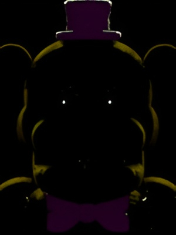

¡Bienvenid@s a la página oficial de los fans de Five Nights at Freddy's!
Este es un sitio web dedicado a la comunidad de fans de la saga de terror realizada por Scott Cawthon.
Scott Cawthon se ha caracterizado por siempre dejar "pistas" ocultas sobre sus próximos proyectos en su Página Web, actualmente Scott no ha actualizado nuevamente su sitio web.
Por eso, en honor a todo lo que él creo en internet, este sitio web tambien tiene pistas y mensajes ocultos al rededor de todo el sitio, que te llevaran a vivir una experiencia diferente a lo que comunmente conocemos, espero puedas encontrar la gran mayoria de misterios que esta web aguarda...